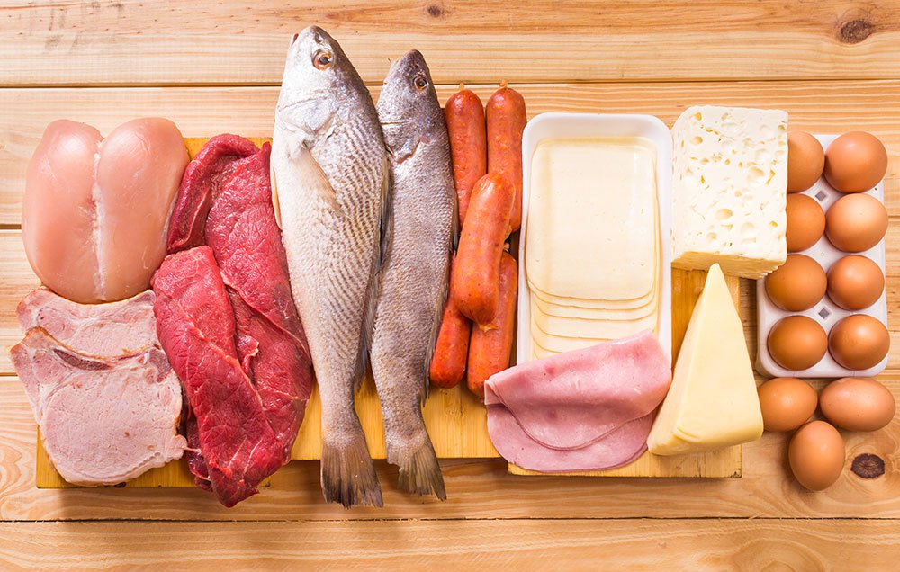
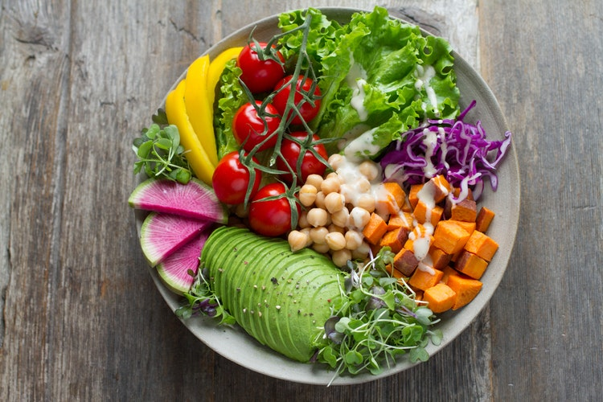

Știai că necesarul de proteine este de minimum 10% din hrana zilnică?
„Dacă mănânci proteine iarna, la primăvară vei arăta senzaţional”
Odată ajunsă în organism și consumată în mod regulat, proteina întreține totalitatea procedurilor complexe ce au loc în organism cu scopul de a procesa substanțele. Pe scurt, reprezintă „cărămizile cu care e construit corpul tău”.
Proteinele sunt alcătuite din aminoacizi, care reprezintă o parte importantă din componenta celulelor, mușchilor și țesuturilor. Acestea nu trebuie să lipsească din alimentație și sunt esențiale în dieta atleților și a persoanelor care practică sport regulat, deoarece acestea sunt în mod constant defalcate în aminoacizi care ajută la repararea țesutului muscular.
Știai că necesarul de proteine este de minimum 10% din hrana zilnică?
1. Esențiali– se obțin din alimentație. Corpul nostru nu îi poate fabrica.
2. Semiesențiali– corpul nu îi poate produce în cantități suficiente în condiții de stres constant sau dacă suntem bolnavi.
3. Neesentiali– corpul îi poate produce singur în cantități suficiente.
Este important de știut că corpurile noastre funcționează deficitar atunci când nu obținem suficiente proteine, deoarece aminoacizii produși în urma lor ajută la producerea unor molecule importante (cum ar fi enzime, hormoni, anticorpi)
Carnea roșie este o sursă importantă de proteine. Este cunoscut faptul că unele feluri de carne roșie pot provoca boli ale sistemului cardiovascular și cancer. Multe studii au asociat consumul de carne roșie cu riscul bolilor de inimă, accident vascular cerebral și moarte prematură. Însă, cercetările ulterioare au demonstrat că această problemă ține mai mult de carnea roșie procesată.
Studiile arată că vegetarienii au o greutate corporală mai mică, un nivel mai redus de colesterol și o tensiune arteriala mai scazută. De asemenea, au un risc mai scăzut de accidente vasculare cerebrale, cancer și deces din cauza bolilor de inimă, comparativ cu iubitorii produselor din carne.
Totuși, ar trebui să mânânci de 18 ori mai mult broccoli pentru a obține aceeași aminoacizi ca în 100 de grame de carne de vită!
În general, proteinele animale sunt mai bune decât proteinele vegetale pentru a construi masa musculară. Conțin mai mulți aminoacizi esențiali și se absorb mai bine, deci sunt superioare din acest punct de vedere.
Dacă mănânci doar produse vegetariene și nu faci nimic ca să corectezi deficientele, nu o să îndeplinești pe deplin cerințele nutriționale. De aceea omnivorii tind sa aibe o masa musculara mai mare decat vegetarienii. Nu că nu ar fi posibil să ai un fizic musculos urmând o dietă vegetariană, doar că este mult mai greu față de o dietă omnivoră. Dar indiferent de sursa proteinelor, cel mai important este să mănânci suficiente zi de zi.
1. Soia - la 100 de grame de boabe mature de soia, prajite uscat (fara ulei) avem 39,58 g proteine, la 100 g de boabe mature de soia, fierte avem 16,64 grame de proteine.
2. Ouăle - un ou întreg mediu, prăjit conţine 6,26 g proteine
3. Somonul - sursă importantă de proteine şi acizi graşi Omega 3
4. Brânza de vaci - 6 grame de proteine la jumătate de cană de brânză
5. Pieptul de pui - la 85 de grame de piept de pui gătit, fără piele, organismul primește circa 27 de grame de proteine
6. Porumbul - aproximativ 15,6 g de proteina per cana.
7. Cartofii - un cartof mediu cu coaja contine aproximativ 4 g de proteine